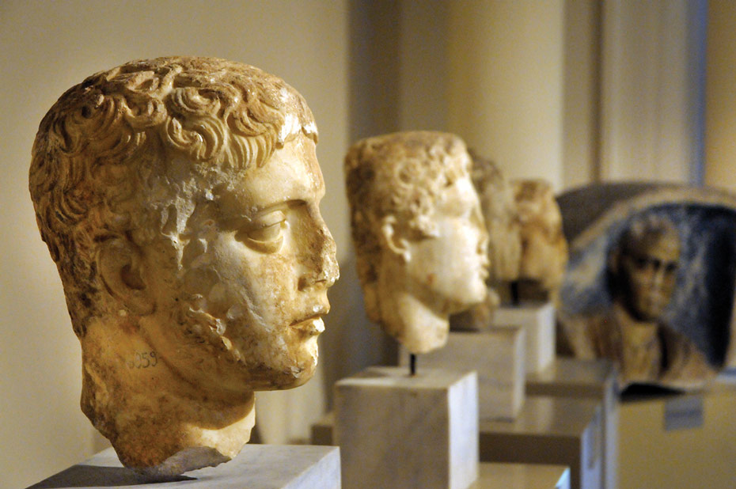

Bursa Kültürel Yerler
Osmanlı'nın İlk Başkenti'nin Kültürel Mirası
Müzeler

Bursa Arkeoloji Müzesi
Bölgenin zengin arkeolojik eserlerini sergileyen müze.

Osmanlı Evi Müzesi
Osmanlı dönemi yaşamını yansıtan etnografik müze.
Tarihi Yapılar

Koza Han
Osmanlı dönemi yaşamını yansıtan tarihi ticaret merkezi.

Yeşil Türbe
Çelebi Mehmet'in türbesi, önemli bir Osmanlı eseri.
Uludağ Milli Parkı
Doğal güzellikleri ve tarihi değeri olan milli park.
Tarihi Camiler

Ulu Cami
Osmanlı'nın en büyük camilerinden biri.
Yeşil Cami
Çinileriyle ünlü tarihi cami.